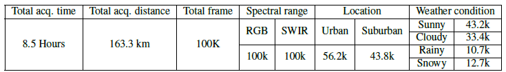

RASMD: RGB And SWIR Multispectral Driving Dataset for Robust Perception in Adverse Conditions
RAMSD consists of paired pixel-wise registered SWIR (Short-Wave Infrared) and RGB images captured under various weather conditions (a). Dual modality provides an advantage in different weather and situations (b). We provide benchmarks of our dataset for object detection and domain translation tasks (c).
Abstract
Current autonomous driving algorithms heavily rely on the visible spectrum, which is prone to performance degradation in adverse conditions like fog, rain, snow, glare, and high contrast. Although other spectral bands like near-infrared (NIR) and long-wave infrared (LWIR) can enhance vision perception in such situations, they have limitations and lack large-scale datasets and benchmarks. Short-wave infrared (SWIR) imaging offers several advantages over NIR and LWIR. However, no publicly available large-scale datasets currently incorporate SWIR data for autonomous driving. To address this gap, we introduce the RGB and SWIR Multispectral Driving (RASMD) dataset, which comprises 100,000 synchronized and spatially aligned RGB-SWIR image pairs collected across diverse locations, lighting, and weather conditions. In addition, we provide a subset for RGB-SWIR translation and object detection annotations for a subset of challenging traffic scenarios to demonstrate the utility of SWIR imaging through experiments on both object detection and RGB-to-SWIR image translation. Our experiments show that combining RGB and SWIR data in an ensemble framework significantly improves detection accuracy compared to RGB-only approaches, particularly in conditions where visible-spectrum sensors struggle. We anticipate that the RASMD dataset will advance research in multispectral imaging for autonomous driving and robust perception systems.
Details of the RASMD
The dataset collected under different weather situations and each RGB-SWIR pairs are spatially registered.


Data acquisition details and data distributions
